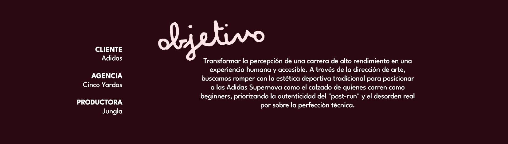
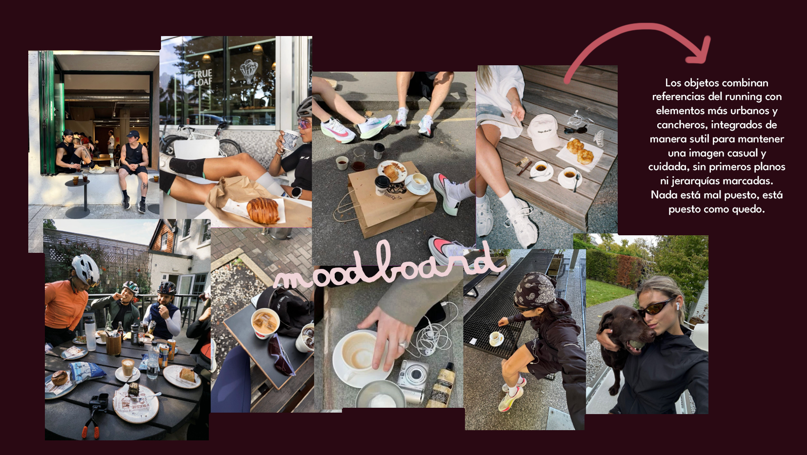

ADIDAS - SUPERNOVA 10K
Producido por JUNGLA

CONCEPTO: IMPERFECCIÓN CONTROLADA
Trabajamos la estética de lo imperfecto como algo aspiracional: un espacio que se siente vivido, compartido y real.
El concepto vive entre el run y el café. Entre hacerlo bien y hacerlo como sale. Ese entre es donde aparece lo imperfecto, lo humano, lo divertido con amigos. No buscamos un look deportivo perfecto, sino el desorden del post-run que invita a la gente a anotarse a la carrera no solo por performance, sino como parte de una experiencia.
